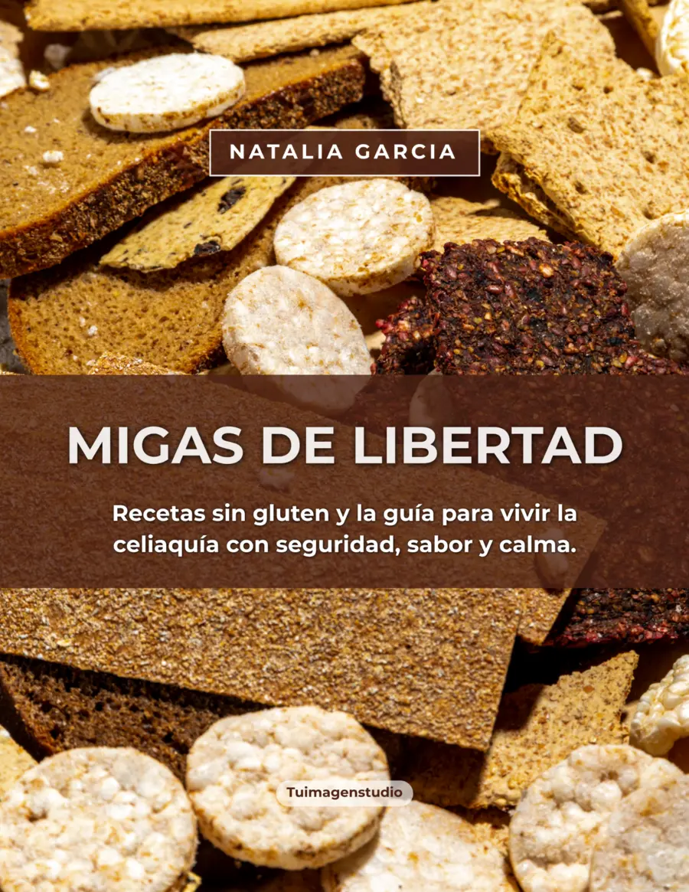

PARA ACOMPAÑARTE
Entender para cuidarte.
Una guía clara y práctica para organizar una alimentación sin gluten con más confianza, sin convertir la cocina en una fuente de preocupación.
LIBRO DIGITAL · SIN GLUTEN
Recetas sin gluten y una guía para vivir la celiaquía con más calma, sabor y seguridad. Un material para acompañarte desde los primeros pasos y volver a consultar cuando lo necesites.

PARA ACOMPAÑARTE
Una guía clara y práctica para organizar una alimentación sin gluten con más confianza, sin convertir la cocina en una fuente de preocupación.
RECETAS
Propuestas pensadas para la vida real: recetas base, desayunos, comidas y opciones para compartir.
VOS VAS A ENCONTRAR
Importante: este libro tiene fines educativos e informativos. No reemplaza el diagnóstico, tratamiento ni seguimiento médico o nutricional personalizado.